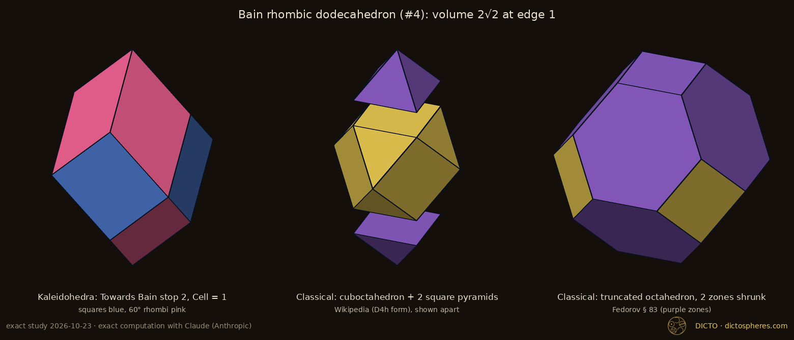
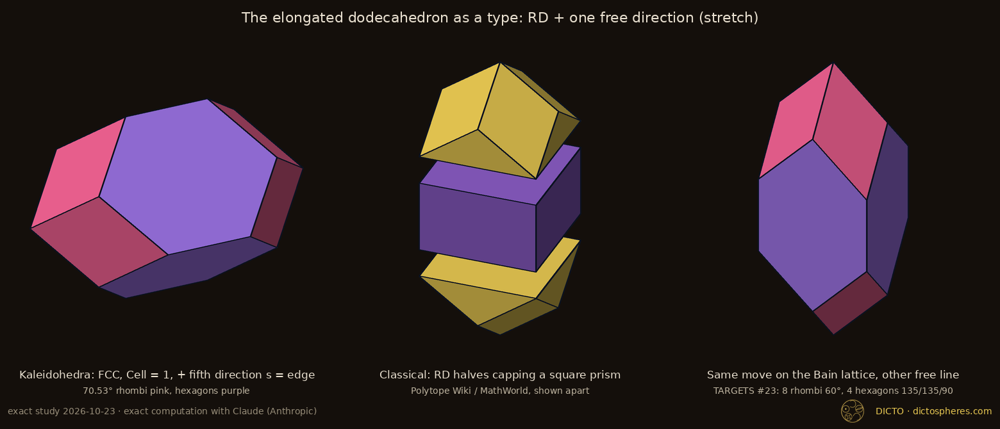
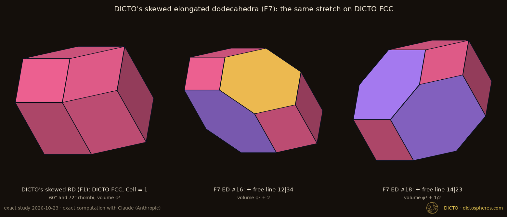
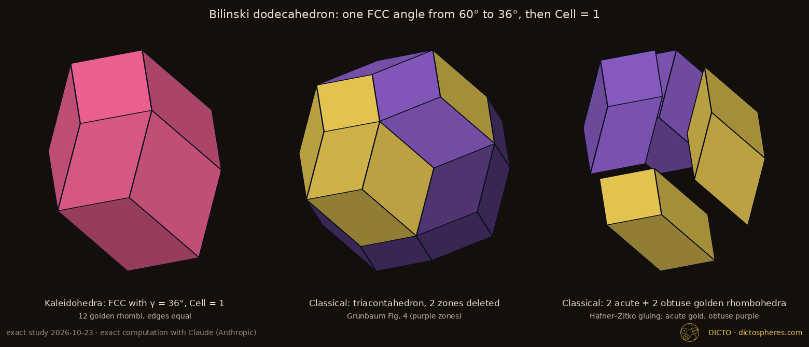
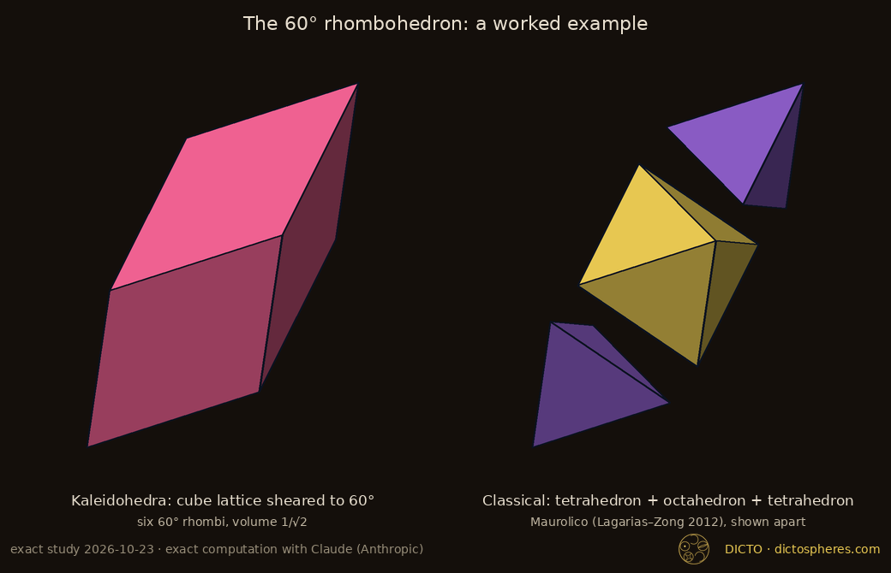

Theorem: the regular-hexagon elongated dodecahedron, the Bain rhombic dodecahedron, the elongated dodecahedron as a type, the Bilinski dodecahedron and the 60° rhombohedron, known from cutting, gluing, zone removal or drawings, each come from one setting of Kaleidohedra's lattice moves, with exact corners, volumes and symmetry
DICTO noticed that solids the books build by cutting and gluing appear in his app whole, at one setting of its sliders. He proposed that the app could rebuild them all exactly.
The regular-hexagon elongated dodecahedron has four regular hexagons, four squares and four 60° rhombi. Grünbaum draws it as the representative of Fedorov's elongated dodecahedron [2, Fig. 2(b), p. 4]; Wikipedia describes it as a contraction of the uniform truncated octahedron [10]. DICTO reached it on 1 October 2026 by another road, in Kaleidohedra: the equal-edged cell at the Bain stop of the lattice, stretched along one more direction (F5 [13]). From these "perfect hexagons" came DICTO's idea, on 22 October 2026, that the same three moves rebuild exactly the space-fillers which the literature gives only as a recipe of cutting and gluing, and that the paper should give for each the exact corners, the exact settings and a proof. A search of the reference library (Appendix B) chose the cases: shapes that the library describes only by dissection, zone removal or a drawing, and that Kaleidohedra reaches.
The descriptions we start from were precise by the standards of their time, and they are fully credited here. In particular the moves are not new: Fedorov wrote in 1885 that by shears and stretches the cube becomes any parallelepiped (his Theorem 32), and that a parallelohedron so changed stays a parallelohedron [1, p. 239], and he shrank the edges of one zone to nothing to pass from the truncated octahedron to the elongated dodecahedron, and on to the hexagonal prism or the rhombic dodecahedron [1, § 83, p. 234] (both pages checked on the page images). The stretch is the addition of a segment (a Minkowski sum), in Delone's language a free direction [4, Def. 2.13]. This paper complements those descriptions; it does not correct them.
Kaleidohedra works with a lattice, a regular grid of points, and a solid around each point. You can tilt the grid (shear), pick the one solid whose edges are all equal (Cell = 1), and stretch the solid along one more direction.
A parallelohedron is a convex solid whose translates by the vectors of a lattice L tile space. The rhombic dodecahedron (RD) type is the zonohedron Z(h1, …, h4) = {Σ tihi : |ti| ≤ ½} of four vectors, no three in a plane; it tiles space by the lattice spanned by the differences hi − hj (Fedorov's ordinary hexaparallelohedron [1]). Its four vectors satisfy one linear relation Σ μihi = 0; changing the signs of some hi (which does not change Z) makes every μi > 0. We call (μ1, …, μ4), up to a common factor, the dependency of the cell. Kaleidohedra's moves on the face-centred cubic (FCC) lattice, whose cell is Kepler's rhombic dodecahedron with hi = ½(±1, ±1, ±1) (an even number of minus signs) and dependency (1, 1, 1, 1), are:
Lemma 1 (tiling test). A centrally symmetric convex solid P tiles space by translations of a lattice L if its volume equals |det L| and no non-zero vector of L lies inside P − P = 2P. Proof. The second condition says the translates P + v, v ∈ L, have disjoint interiors; with volume |det L| they fill a fundamental domain's volume exactly, so they leave no gap. ∎ The study checks both conditions exactly for every solid of this paper, and in addition that each of the solid's face neighbours is a lattice translate.
Five solids that the books build from pieces each come out of the app at one setting of its moves. The table says which setting, and what you get.
| Solid | Move | Faces; symmetry | Volume (edge 1) | Classical construction |
|---|---|---|---|---|
| Bain rhombic dodecahedron | shear A = diag(1, 1, √2) (Towards Bain, stop 2); Cell = 1 (= Cell = 0 here) | 4 squares, 8 rhombi of 60°; D4h | 2√2 ≈ 2.8284 | cuboctahedron + 2 square pyramids [11]; truncated octahedron with two perpendicular zones shrunk [1, § 83] |
| Regular-hexagon elongated dodecahedron (F5) | the Bain move, then stretch u = (1, 0, 0), s = 1 | 4 regular hexagons, 4 squares, 4 rhombi of 60°; D2h | 4√2 ≈ 5.6569 | truncated octahedron with one zone shrunk [1, § 83], "a contraction" [10]; drawn in [2, Fig. 2(b)] |
| Classical elongated dodecahedron | FCC, Cell = 1, stretch u = (1, 0, 0), s = the edge | 8 rhombi of 70.53°, 4 equal-edged hexagons (125.26°, 125.26°, 109.47°); D4h | 8/3 + 16√3/9 ≈ 5.7459 | rhombic dodecahedron cut at its equator, the halves capping a square prism [10] |
| Bilinski dodecahedron | FCC sliders with only γ moved from 60° to 36° (a = b = c, α = β = 60°, cos γ = φ/2); Cell = 1 | 12 golden rhombi; D2h | (4/5)√(5 + 2√5) ≈ 2.4621 | triacontahedron with two zones deleted [2, pp. 5–6, Fig. 4]; glued from golden rhombohedra [8] |
| 60° rhombohedron | cube lattice sheared so that its edges meet at 60° (a = b = c, α = β = γ = 60°) | 6 rhombi of 60°; D3d | 1/√2 ≈ 0.7071 | tetrahedron + octahedron + tetrahedron (Maurolico, 16th century [7, p. 1542]) |
Table 1. The five cases. φ = (1 + √5)/2. Corners in ℚ(√2) for the Bain cases and the 60° rhombohedron, ℚ(√3) for the classical elongated dodecahedron, ℚ(√5) for the Bilinski dodecahedron. Lattice angles such as γ are angles between basis vectors of the lattice, not face angles. Exact corners, lattice bases and maps: Appendix A and the study's data files.
Why it is true: each move gives a solid whose corners can be written down exactly. Checking that it fills space, and that it is the same solid as the cut-and-glue one, is then exact arithmetic, done here with square roots kept as square roots.
Proof. For each row the study replays the move from its exact parameters (the shear matrix, Cell, the stretch vector) and obtains the corners of a zonohedron Z with four or five generators; Z is closed, convex, wound outward, and satisfies Euler's formula, and its faces, edges and symmetry group are found from the exact corners. Z tiles space by Lemma 1: its volume equals |det L| for the moved lattice L, and no vector of L lies inside 2Z (all vectors with coefficients up to 2 in the basis are tested; a vector of L inside 2Z would have to be among them, since 2Z lies in that range). Congruence with the classical construction is tested by matching corners: every corner of one solid is paired with a corner of the other so that all distances agree, exactly. Where the classical construction is a gluing, the pieces are checked to be disjoint, to lie inside the solid, and to add up to its volume (cuboctahedron 5√2/3 and two pyramids √2/6; tetrahedra √2/12 and octahedron √2/3; for the elongated dodecahedron, two rhombic dodecahedron halves and a square prism). Where it is a zone operation, the zones of the uniform truncated octahedron (edge directions (0, ±1, ±1)/√2 and their permutations, scaled to edge 1) or of the triacontahedron are deleted and the result matched in the same way. All arithmetic is exact, in ℚ(√2), ℚ(√3) or ℚ(√5); nothing is decided by floating point. The study's check reads the data files alone and passes 223 of 223 checks; six kinds of deliberate corruption (a corner moved, a face reversed, a lattice vector doubled, a shear entry changed, a stored volume changed, a classical point moved) are each caught in every one of the nine solids, 54 of 54; and the app's own code (krp-core), set to the same slider values, gives the same cells, 12 of 12 (Appendix A). ∎
Two further facts come out of the Bain rows. Shrinking the zone of the stretch direction in the regular-hexagon elongated dodecahedron gives back the Bain rhombic dodecahedron, and shrinking any one of the truncated octahedron's six zones gives the regular-hexagon elongated dodecahedron: Fedorov's chain truncated octahedron → elongated dodecahedron → rhombic dodecahedron [1, § 83] read forwards, with exact data, is the stretch read backwards. Shrinking a pair of the truncated octahedron's zones at 60° to each other, instead of a perpendicular pair, gives a hexagonal prism, the other branch of Fedorov's chain.
A perfect point. The regular-hexagon elongated dodecahedron is a perfect point of the moves: at this one setting every face is a regular polygon or, for the 60° rhombi, two equilateral triangles. Such settings form a family of their own, which we leave to a separate catalogue.

A rhombic dodecahedron can be stretched into an elongated dodecahedron in exactly three directions, and in no other, if the result is still to fill space. So the elongated dodecahedron is not one shape but three stretches of every rhombic dodecahedron.
Why: a solid fills space by translation exactly when every belt of faces around it has four or six faces. Adding a direction adds faces to the belts, and only these three directions keep every belt at six or fewer.
Proof. A convex solid tiles space by translation if and only if it is centrally symmetric, its faces are centrally symmetric, and its projection along each edge direction (each face of codimension 2) is a parallelogram or a centrally symmetric hexagon (Minkowski and Venkov, independently McMullen; stated in [4, § 2, p. 5]). A zonohedron satisfies the first two. Its belt around a generator g has 2m faces, where m is the number of distinct planes through g spanned by g and another generator; the third condition asks m ≤ 3 for every g. Around hi, the other three h's already span three distinct planes (no three h's lie in a plane), so u must lie in one of them: u ∈ span(hi, hj(i)). Take i = 1 and j(1) = a, and let b, c be the other two indices. Around hb, u ∈ span(hb, hx), and x cannot be 1 or a, for then u would lie in two planes through h1 or through ha, and so be parallel to it. Hence x = c and u lies on the line span(h1, ha) ∩ span(hb, hc), which contains the non-zero vector μ1h1 + μaha = −(μbhb + μchc). Conversely, for u on that line every hi has u in one of its three planes, so its belt keeps 6 faces, and the h's lie in the two planes through u, so the new belt has 4 faces. Five generators with these belts give Fedorov's counts 18, 28, 12 (his elongated hexaparallelohedron [1, § 77, case 3]). ∎ (If u is parallel to some hi, the stretch only lengthens that zone and the cell stays an RD type [2, p. 5].)
The stretch is Delone's free direction [4, Def. 2.13], and the theorem follows directly from the Minkowski–Venkov conditions; we did not find it written out in the sources searched, and expect that it is known to specialists. In Kaleidohedra's terms the elongated dodecahedron has these parameters: the lattice (six sliders), Cell, the pair split ij|kl and the stretch s.
The classical elongated dodecahedron. On the plain FCC lattice (dependency (1, 1, 1, 1)) the three free lines are the three cube axes, and the stretch along (1, 0, 0) by the edge gives the equal-edged elongated dodecahedron of Table 1, congruent to the rhombic dodecahedron cut at its equator with the halves capping a square prism [10] (Figure 3). On the Bain lattice two of the three free lines, (1, 0, 0) and (0, 1, 0), give the regular-hexagon elongated dodecahedron; the third, the stretched axis (0, 0, 1), gives a different equal-edged one with 8 rhombi of 60° and 4 hexagons with corners 135°, 135° and 90° (volume 2 + 2√2 at edge 1).

DICTO's skewed elongated dodecahedra (F7). DICTO's skewed lattice (Towards DICTO FCC, stop 2) has as its equal-edged cell DICTO's skewed rhombic dodecahedron F1 [13]: 6 rhombi of 60° and 6 rhombi of 72°, volume φ², dependency (φ, φ, 1, 1). Its three free lines meet the four edge directions at 60°, 60°, 36°, 36° (split 12|34), at 36°, 36°, 72°, 72° (14|23) and at 37.76°, 37.76°, 82.24°, 82.24° (13|24). The first two lie on two-fold axes of the icosahedron, the directions DICTO's lattice is built from, and the third does not; this is why F7 has exactly two members. With s = 1 they are the two skewed elongated dodecahedra of F7, every edge 1, both of symmetry C2h: on 12|34, 4 rhombi of 60°, 4 rhombi of 72°, 2 hexagons with corners 144°, 144°, 72° and 2 regular hexagons, volume φ² + 2; on 14|23, 6 rhombi of 60°, 2 rhombi of 72° and 4 hexagons with corners 144°, 108°, 108°, volume φ³ + ½. Both tile space (Lemma 1, exact) and agree with the app's stored cells.

Bilinski's dodecahedron, found in 1960, is known as what is left when you remove two belts from a 30-faced solid, or as a gluing of slanted bricks. In the app it is the ordinary face-centred cubic lattice with one angle changed, from 60° to 36°, and then the equal-edged cell.
Bilinski found in 1960 that Fedorov's list of convex solids with congruent rhombic faces had missed one, a dodecahedron with twelve golden rhombi [3] (cited here through Grünbaum [2], who describes it and its history; Bilinski's paper was not read). The library describes it three ways, all as operations on other solids: Kepler's triacontahedron T with zones deleted, T → Fedorov's rhombic icosahedron F → B [2, pp. 5–6, Fig. 4], in Coxeter's words "removing one of the p zones … and bringing together the two remaining pieces of the surface" (quoted in [9]); and glued from golden rhombohedra, "by gluing appropriate number of rhombohedra", with no number given [8].
The key fact behind (b): a linear map keeps the relation between the four edge directions. Kepler's dodecahedron has the relation 1 : 1 : 1 : 1, Bilinski's φ : φ : 1 : 1, so no tilt or stretch turns one into the other.
Proof. (a) and (c) are rows of the exact study: B is the zonohedron of four of the six five-fold vectors (0, ±1, φ), (±1, φ, 0), (φ, 0, ±1) (edge √(φ + 2), where its volume is 8 + 4√5 = 4φ³); the move from the sliders, the zone deletions and the gluings are each matched corner by corner, and the four pieces are congruent to Grünbaum's acute and obtuse rhombohedra Ha and Ho, of volume 2φ² and 2φ at that edge, adding to 2·2φ² + 2·2φ = 4φ³. The app reaches the setting directly: its angle slider runs from 20° to 150° in steps of 0.1°, so 36.0° is on its grid (the lengths are shown to the slider's step, the exact values being those above). (b) A linear map sends Z(h1, …, h4) to Z(Ah1, …, Ah4) with the same dependency, and the generators of an RD-type cell are its edge vectors, determined by the solid up to sign; so the dependency, up to a common factor and the order of its entries, is an affine invariant. Kepler's dodecahedron has (1, 1, 1, 1); for B, the four five-fold vectors satisfy φ, φ, 1, 1. The shear keeps (1, 1, 1, 1) at Cell = 0; the Cell move, which shifts all four vectors together, changes it. ∎
Part (b) agrees with Grünbaum, who shows that B is not affinely equivalent to K by parallel face diagonals [2, pp. 6–7], and with his remark that B is affinely a Dirichlet–Voronoi tile of a lattice affine to the FCC lattice [2, pp. 8–9]: in the move, the shear is that affinity, and Cell = 1 is what makes the tile B and not an image of K. For the count in (c): Coxeter gives the triacontahedron as ten acute and ten obtuse golden rhombohedra (quoted in [9], slide 2); for B the sources searched give no number, and the study finds two of each.

Remark (DICTO's F1 and Bilinski's dodecahedron). DICTO's skewed rhombic dodecahedron F1 has the same dependency as B, (φ, φ, 1, 1) with matching order. A linear map L sending three of B's edge vectors to the corresponding ones of F1 then sends the fourth too, so F1 is a linear image of B; the study stores L exactly and checks that it carries B's fourteen corners onto F1's. F1 is not congruent to B (its faces are rhombi of 60° and 72°, not golden rhombi), and it is not an affine image of Kepler's dodecahedron. This makes precise the earlier note that Bilinski's dodecahedron is F1's nearest known relative [13]: same affine class, different shape. A search of the full texts of the reference library on 23 October 2026 (every mention of Bilinski or B12 read for affine or linear images, shears, 60° or 72°) found this relation stated nowhere; Lalvani's patents in the library have no text layer and were not searched.
The simplest case shows the whole method in miniature: slant a stack of cubes until its edges meet at 60°, and each cube becomes the rhombohedron that Maurolico made from two tetrahedra and an octahedron.
Maurolico glued two regular tetrahedra to opposite faces of a regular octahedron, "six congruent faces, each a 60°–120° rhombus", which tiles space by the FCC lattice [7, p. 1542, Fig. 2]. In Kaleidohedra: shear the cube lattice to a = b = c = 1 and α = β = γ = 60°. The sheared cube lattice is the FCC lattice itself, and the sheared cube is the parallelepiped on the app's FCC basis: corners ½√2·(0, 0, 0) to ½√2·(1, 1, 1) along the vectors (0, 1, 1)/√2, (1, 0, 1)/√2 and (1, 1, 0)/√2, six rhombi of 60°, symmetry D3d, volume 1/√2. It is congruent to Maurolico's gluing, whose pieces add up exactly: √2/12 + √2/3 + √2/12 = √2/2. Here the exact data are easy and standard; the example is given to show the method, not to fill a gap.

The shapes are old and the moves are old; the exact settings, corners and proofs are what is added.
Two sources were not read: Bilinski's paper [3], which may give coordinates or a volume for B (none is compared here), and the first description of the Bain rhombic dodecahedron. The library search (Appendix B) is limited to the library's local full texts; link-only entries, such as Delone [5] and McMullen [6], are cited through the sources that quote them.
Shapes that the books make by cutting and gluing come out of one lattice, whole and exact, by a tilt, the equal-edged choice and a stretch.
Five classical space-fillers, each known from a recipe of cutting, gluing, zone removal or a drawing, are each one setting of Kaleidohedra's moves, with exact corners in ℚ(√2), ℚ(√3) or ℚ(√5), exact volumes, symmetry groups and proofs that they tile. The moves are Fedorov's; the settings make his transitions concrete: the stretch read backwards is his zone shrinking, and the Bilinski dodecahedron, which Fedorov missed, is his face-centred cubic lattice with one angle at 36° and the equal-edged cell. The elongated dodecahedron is a type with exactly three stretches per rhombic dodecahedron.
Still to do: list every setting where all faces are regular, and look for other space-fillers that are known only as recipes.
Open questions. (1) The catalogue of perfect points, the settings at which every face is regular, of which the regular-hexagon elongated dodecahedron is one; left to a separate paper. (2) Which other space-fillers known only by dissection (for example the tetrahedra of Hill, Sommerville and Goldberg, not read here) are reached by Kaleidohedra's moves.
In studies/2026-10-23-exact-vs-dissection (also attached as exact-vs-dissection-study-bdc063d.zip): exact.py (exact arithmetic in ℚ(√2), ℚ(√3), ℚ(√5)); build.py (builds every solid and classical construction, 93 of 93 build checks); check.py (re-checks everything from the data files alone, 223 of 223, and the 54 corruptions; log check.log); app_crosscheck.mjs (the app's krp-core at commit e5e5dbc set to the same sliders, 12 of 12; log app_crosscheck.log); render.py (Figures 1–6); data/*.json (one file per solid: exact and decimal corners, faces, the move in replayable form, the lattice, the classical constructions, credits and checks). Python 3 with numpy and Pillow; Node.js for the app cross-check.
Edge 1 unless stated. Corners are the zonohedron of the edge vectors listed (all sums ½(±v1 ± v2 ± …), centred at the origin); the full corner lists, faces and lattice bases are in the data files named, in exact and decimal form.
| Solid (data file) | Edge vectors | Corners, edges, faces | Volume | Lattice settings (app sliders) |
|---|---|---|---|---|
| Bain RD (bain-rd.json) | (½, ½, ½√2), (½, −½, −½√2), (−½, ½, −½√2), (−½, −½, ½√2) | 14, 24, 12 | 2√2 | a = 1, b = c = √(3/2), cos α = 2/3, cos β = cos γ = 1/√6 (α ≈ 48.19°, β = γ ≈ 65.91°) |
| Regular-hexagon ED (regular-hexagon-ed.json) | the four above and (1, 0, 0) | 18, 28, 12 | 4√2 | as the Bain RD; stretch (1, 0, 0), s = 1 |
| Classical ED (elongated-dodecahedron-type.json) | ½(±1, ±1, ±1) (even number of minus signs) and (√3/2, 0, 0); edge √3/2 | 18, 28, 12 | 2 + √3 at edge √3/2; 8/3 + 16√3/9 at edge 1 | FCC: a = b = c, α = β = γ = 60°; stretch (1, 0, 0), s = √3/2 |
| Bain ED along z (same file) | the Bain four and (0, 0, 1) | 18, 28, 12 | 2 + 2√2 | as the Bain RD; stretch (0, 0, 1), s = 1 |
| F1 (same file) | (1, 0, 0), (−½, −φ/2, (1 − φ)/2), (−½, φ/2, (1 − φ)/2), ((1 − φ)/2, ½, φ/2) | 14, 24, 12 | φ² | Towards DICTO FCC stop 2: a = φ/√2, b = c = √(3/2), α ≈ 55.69°, β ≈ 62.15°, γ ≈ 40.91° (exact cos² in the file) |
| F7, 12|34 (same file) | F1's four and (½, −φ/2, (1 − φ)/2) | 18, 28, 12 | φ² + 2 = (7 + √5)/2 | as F1; stretch along the line 12|34, s = 1 |
| F7, 14|23 (same file) | F1's four and (φ/2, (φ − 1)/2, ½) | 18, 28, 12 | φ³ + ½ = 5/2 + √5 | as F1; stretch along the line 14|23, s = 1 |
| Bilinski B (bilinski-dodecahedron.json) | (0, −1, −φ), (0, −1, φ), (1, φ, 0), (−1, φ, 0); edge √(φ + 2) | 14, 24, 12 | 8 + 4√5 at edge √(φ + 2); (4/5)√(5 + 2√5) at edge 1 | a = b = c, α = β = 60°, γ = 36° (cos γ = φ/2); Cell = 1; dependency (φ, φ, 1, 1) |
| 60° rhombohedron (rhombohedron-60.json) | (0, 1, 1)/√2, (1, 0, 1)/√2, (1, 1, 0)/√2 | 8, 12, 6 | 1/√2 | cube lattice, a = b = c = 1, α = β = γ = 60° |
The same data in machine-readable form, with the shear matrices, the Cell shift, the classical constructions and every check, are in the attached study; check.py re-runs all checks from these files alone.
The library check of 23 October 2026 (reference library DICTOR-Master/kaleidohedra-references, commit 0e08bdb) searched the full texts of the library's local sources, case-insensitive, for: Sommerville, Goldberg, Hill, gyrobifastig, Bilinski, Delone or Delaunay, Minkowski, Vorono, Fedorov (and Fedoroff, Federov), elongated dodeca, zone, dissect, space-fill (space fill, spacefill, fill space, fills space, tile space, tiles space), rhomb and zona (Kepler, Latin), truncated octahedron, rhombic dodecahedron, cut, glue, stretch and shear. The sources below are those whose text contains parallelohedr, zonohedr, space-fill, space fill, fill(s) space, tile(s) space, dissect, gyrobifastig, Sommerville, Bilinski, elongated dodeca, Fedorov, truncated octahedron or rhombic dodecahedron, with Kepler 1619 (Book II, Prop. XXVII) and Goldberg 1937 (not about space-fillers) added by hand. For the remark of § 5 the same texts were searched again on 23 October 2026 for Bilinski, B12 and "dodecahedron of the second kind", each hit read for affine, linear image, shear, skew, 60° or 72°, and for counts of rhombohedra in B (two acute, two obtuse): only Grünbaum [2] discusses affine images of B (not affinely equivalent to K; affinely a Dirichlet–Voronoi tile), and no source gives the count. Page images without a text layer (Fedorov 1885, read through the chapter 13 translation and two checked pages, and the patents of Fuller, Snelson, Pearce, Baer, Hogan, Bergman and Lalvani) and link-only entries were not searched. Outside the library: the Wikipedia pages [10, 11] (23 October 2026) and Crossref for DOIs.
| Author(s) | Year | Title |
|---|---|---|
| Johannes Kepler | 1619 | Harmonices mundi libri V |
| E. S. Fedorov | 1885 | Elements of the Theory of Figures (Nachala ucheniya o figurah) |
| M. Goldberg | 1937 | A class of multi-symmetric polyhedra |
| Haresh Lalvani | 1990 | Transformational part-count in layered octahedral-tetrahedral truss configurations (NASA TM-102635) |
| P. W. Messer | 1995 | Stellations of the rhombic triacontahedron and beyond |
| T. C. Hales | 1998 | An overview of the Kepler conjecture |
| J. H. Conway, C. Radin, L. Sadun | 1999 | On angles whose squared trigonometric functions are rational |
| M. Baake | 1999 | A guide to mathematical quasicrystals |
| O. Ogievetsky, Z. Papadopolos | 1999 | On Quasiperiodic Space Tilings, Inflation and Dehn Invariants |
| U. Betke, M. Henk | 1999 | Densest lattice packings of 3-polytopes |
| Z. Papadopolos, O. Ogievetsky | 1999 | On Inflation Rules for Mosseri-Sadoc Tilings |
| Z. Papadopolos, O. Ogievetsky | 1999 | On quasiperiodic space tilings, inflation and Dehn invariants |
| R. V. Moody | 2000 | Model sets: a survey |
| I. Hafner, T. Zitko | 2002 | Rhombic polyhedra: from dissection of the cube to space filling with prolate rhombohedra and rhombic dodecahedra of the second kind |
| M. Senechal | 2004 | Donald and the golden rhombohedra |
| K. Bezdek, Z. Langi, M. Naszodi, P. Papez | 2007 | Ball-polyhedra |
| S. Kabai | 2007 | 54-Faced Space-Filling Polyhedron (Wolfram Demonstration; description and screenshot) |
| S. Kabai | 2007 | Golden Octet Truss (Wolfram Demonstration; description and screenshot) |
| S. Kabai | 2008 | A Rhombic Dodecahedron Made of Rhombic Triacontahedra (Wolfram Demonstration; description and screenshot) |
| S. Kabai | 2008 | Relating a Rhombic Triacontahedron and a Rhombic Dodecahedron (Wolfram Demonstration; description and screenshot) |
| M. Koca, M. Al-Ajmi, N. O. Koca | 2009 | Grand antiprism and quaternions |
| S. Torquato, Y. Jiao | 2009 | Dense packings of polyhedra: Platonic and Archimedean solids |
| B. Grünbaum | 2010 | The Bilinski dodecahedron, and assorted parallelohedra, zonohedra, monohedra, isozonohedra and otherhedra |
| P. Kramer | 2010 | Gateways towards quasicrystals |
| D. Frettlöh | 2011 | Icosahedral tilings in R3: the ABCK tilings (draft chapter) |
| J. Koskinen | 2011 | Unusual tilings and transformations |
| J. de Graaf, R. van Roij, M. Dijkstra | 2011 | Dense regular packings of irregular non-convex particles |
| M. Koca, N. O. Koca, M. Al-Ajmi | 2011 | Branching of the W(H4) polytopes and their dual polytopes under the Coxeter groups W(A4) and W(H3) represented by quaternions |
| M. Koca, N. O. Koca, M. Al-Barwani | 2011 | Snub 24-cell derived from the Coxeter-Weyl group W(D4) |
| A. Garber, A. Gavrilyuk, A. Magazinov | 2012 | The Voronoi conjecture for parallelohedra with simply connected delta-surface |
| J. C. Lagarias, C. Zong | 2012 | Mysteries in packing regular tetrahedra |
| M. Baake, U. Grimm | 2012 | Mathematical diffraction of aperiodic structures |
| M. Koca, N. O. Koca, R. Koc | 2012 | Affine Coxeter group Wa(A4), quaternions, and decagonal quasicrystals |
| P. F. Damasceno, M. Engel, S. C. Glotzer | 2012 | Crystalline assemblies and densest packings of a family of truncated tetrahedra and the role of directional entropic forces |
| R. Gabbrielli, Y. Jiao, S. Torquato | 2012 | Families of tessellations of space by elementary polyhedra via retessellations of face-centered-cubic and related tilings |
| S. Torquato, Y. Jiao | 2012 | Organizing principles for dense packings of nonspherical hard particles: not all shapes are created equal |
| N. Fujita, H. Takano, A. Yamamoto, A.-P. Tsai | 2013 | Cluster packing geometry for Al-based F-type icosahedral alloys |
| M. Baake, D. Damanik, U. Grimm | 2015 | What is aperiodic order? |
| N. O. Koca, M. Koca, A. Al-Mukhaini, A. Al-Qanobi | 2015 | Quaternionic representations of the pyritohedral group, related polyhedra and lattices |
| S. Kabai | 2015 | Cluster of 14 Rhombic Triacontahedra (Wolfram Demonstration; description and screenshot) |
| A. T. Cadotte, J. Dshemuchadse, P. F. Damasceno, R. S. Newman, S. C. Glotzer | 2016 | Self-assembly of a space-tessellating structure in the binary system of hard tetrahedra and octahedra |
| C. Hann, J. E. S. Socolar, P. J. Steinhardt | 2016 | Local growth of icosahedral quasicrystalline tilings |
| R. M. K. Dietl, J.-H. Eschenburg | 2016 | The icosahedral quasiperiodic tiling and its self-similarity |
| A. Garber | 2019 | Voronoi conjecture for five-dimensional parallelohedra |
| A. Al-Siyabi, N. O. Koca, M. Koca | 2020 | Icosahedral polyhedra from D6 lattice and Danzer's ABCK tiling |
| M. Koca, R. Koc, N. O. Koca, A. Al-Siyabi | 2020 | Icosahedral tiling with dodecahedral structures |
| N. O. Koca, R. Koc, M. Koca, A. Al-Siyabi | 2020 | Dodecahedral Structures with Mosseri-Sadoc Tiles |
| V. R. Krishnamurthy, E. Akleman, S. G. Subramanian et al. | 2020 | Bi-axial woven tiles: interlocking space-filling shapes based on symmetries of bi-axial weaving patterns |
| V. R. Krishnamurthy, E. Akleman, S. G. Subramanian, M. Ebert, J. Cui, C. Fu, C. Starrett | 2022 | Geometrically interlocking space-filling tiling based on fabric weaves |
| R. Akpanya et al. | 2024 | Topologically interlocking blocks inside the tetroctahedrille |
| M. Kovačević | 2026 | An isodiametric theorem and lattice diameter-perfect codes in A3 |
| R. Al Raisi, N. O. Koca, M. Koca, R. Koc | 2026 | Modified Mosseri-Sadoc tiles from D6 |
| Wikipedia contributors | 2026 | Fullerene |
| Wikipedia contributors | 2026 | Goldberg polyhedron |
| Wikipedia contributors | 2026 | Tetrahedral-octahedral honeycomb (incl. the gyrated form) |